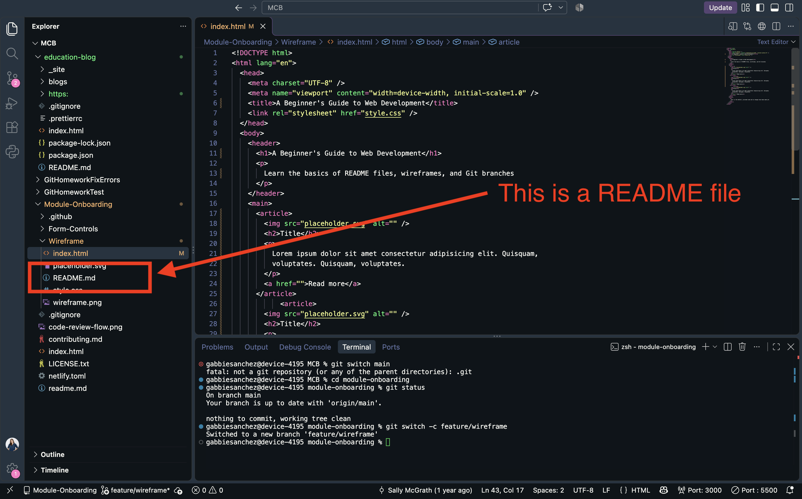
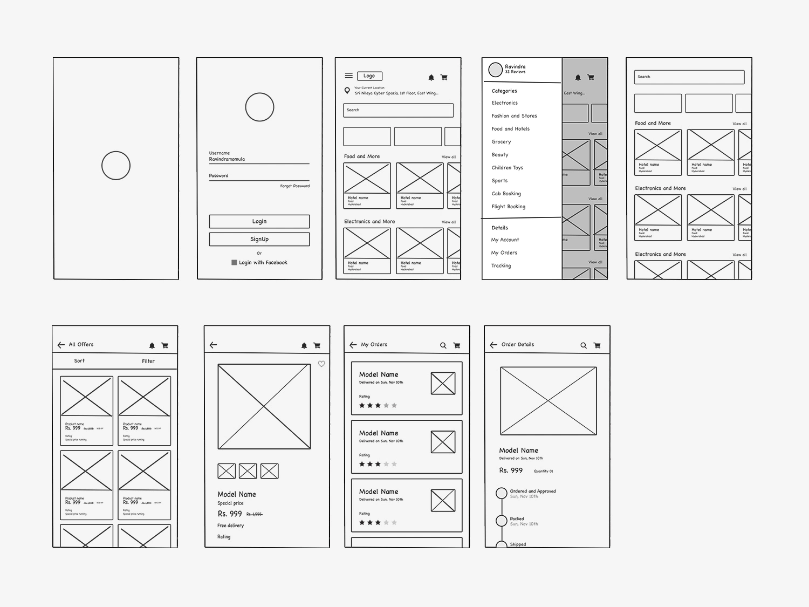

What is the purpose of a README file?
A README file introduces a project and explains what it does, how to set it up, and how to use it. It helps developers and contributors understand a project's purpose, requirements, and instructions before working with the code.
Read more about README files

What is the purpose of a wireframe?
A wireframe is a simple visual outline of a webpage. It shows where elements such as headings, images, buttons, and content will go before the page is built. Wireframes help developers and designers agree on the layout and user experience.
Read more on wireframes